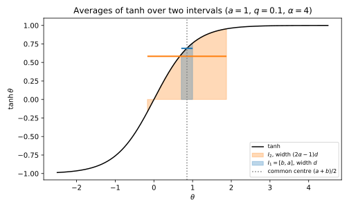
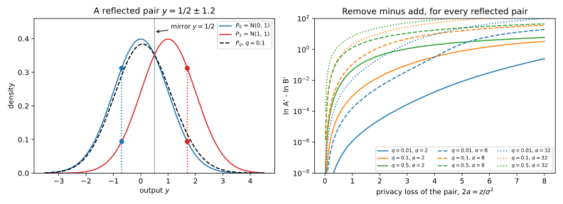
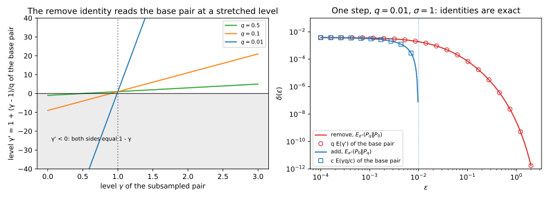
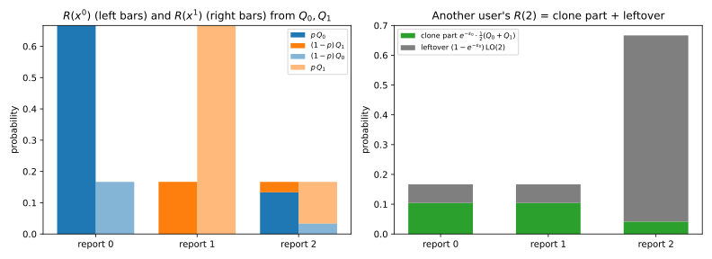
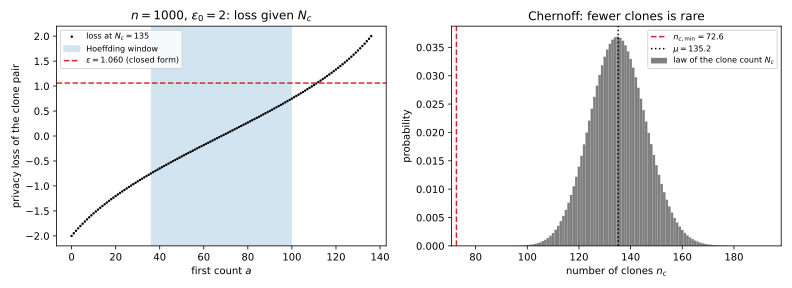
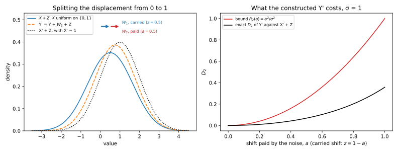
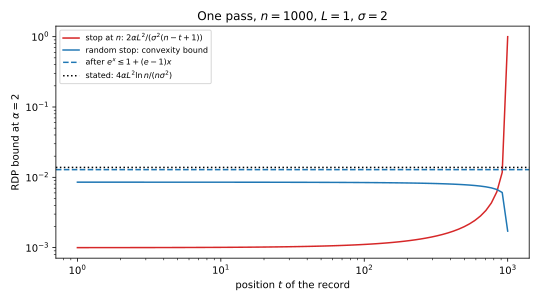

Appendix L — Subsampling, shuffling and iteration
Part 4 gets much of its privacy from the adversary’s uncertainty. For example, a record that a training step samples only with some small probability may not have been used at all, and a report sent through a shuffler hides among the others. Likewise, a record used early in training is covered by the noise of every later step. The chapters state the results that turn this uncertainty into numbers, but several of the proofs are only cited or sketched. This appendix derives five of them in full. They sit together because they share one method: write what the adversary sees as an average, or as a post-processing, of something simpler, and then use two facts. The first is that averaging two runs with the same weights cannot make them easier to tell apart. The second is that processing the output cannot either.
Table L.1 lists the derivations and where the chapters state or use them.
| Derivation | Stated or used in |
|---|---|
| The remove direction dominates in Rényi divergence | Section 33.3 (Equation 33.17); Section 31.6 |
| Dominating pairs for Poisson subsampling, both directions | Section 34.5; Section 37.1 |
| The clone reduction for shuffling, and a closed-form bound | Section 35.2 (Equation 35.5, Equation 35.7) |
| Shift reduction and contraction | Section 35.3 (Equation 35.12, Equation 35.13); Section 35.4 |
| The random stopping time | Section 35.3 |
L.1 The remove direction dominates in Rényi divergence
L.1.1 What the chapter uses
Stochastic gradient descent (SGD) run with differential privacy (DP) is called DP-SGD. Each of its steps uses each record with probability \(q\), the sampling rate. It adds Gaussian noise to a sum whose sensitivity is 1, and the noise multiplier \(\sigma\) is the standard deviation of that noise. The chapter first reduces the step to one dimension, the direction in which your clipped gradient moves the sum, and takes the worst case, where it moves the sum by the full sensitivity 1. Then the output without your record is the normal distribution \(P_0 = \mathcal N(0, \sigma^2)\). With your record, the step uses it with probability \(q\) and then shifts the mean by 1, so the output is the mixture \[P_q = (1 - q)P_0 + qP_1, \qquad P_1 = \mathcal N(1, \sigma^2). \tag{L.1}\]
The neighbouring relation is add/remove, so a guarantee must cover both orders of the pair. The remove direction puts the output with your record first, \((P_q, P_0)\), and the add direction puts it second, \((P_0, P_q)\). Rényi differential privacy (RDP) measures each direction by a Rényi divergence. For two distributions \(P\) and \(Q\) and a number \(\alpha > 1\), called the order, it is the log-average of a power of the likelihood ratio, \[D_\alpha(P\|Q) = \frac{1}{\alpha - 1}\ln\mathbb E_{Q}\Big[\Big(\frac{P}{Q}\Big)^\alpha\Big]. \tag{L.2}\] Amplification by subsampling computes the RDP curve from the remove direction alone, because that direction has an exact binomial series. That is valid only if the remove direction is the larger one:
\[D_\alpha(P_q\|P_0) \ \ge\ D_\alpha(P_0\|P_q) \qquad\text{for every } \alpha > 1,\ q \in [0, 1],\ \sigma > 0. \tag{L.3}\]
That chapter states this as part of Equation 33.17 in Section 33.3. Its step 8 cites Mironov, Talwar & Zhang (2019, Theorem 5) and checks the inequality numerically on a grid of orders. Concentrated DP (Section 31.6) cites this inequality to that chapter and to this section. This section supplies the proof, for every real order, not only integer ones.
Both divergences can be written as averages under \(P_0\). Write \(r(y) = P_1(y)/P_0(y)\) for the likelihood ratio of the two Gaussians, so that \(P_q/P_0 = 1 - q + q\,r\). The remove moment is the chapter’s Equation 33.18. The add moment is an average under \(P_q\) of \((P_0/P_q)^\alpha\). Moving that average to \(P_0\) multiplies the integrand by \(P_q/P_0\), and \((P_0/P_q)^\alpha\cdot P_q/P_0 = (P_q/P_0)^{1-\alpha}\). So the two moments are \[A_\alpha = \mathbb E_{P_0}\big[(1 - q + q\,r)^\alpha\big] = e^{(\alpha-1)D_\alpha(P_q\|P_0)}, \qquad B_\alpha = \mathbb E_{P_0}\big[(1 - q + q\,r)^{1 - \alpha}\big] = e^{(\alpha-1)D_\alpha(P_0\|P_q)}. \tag{L.4}\] Since \(\alpha - 1 > 0\), Equation L.3 says exactly that \(A_\alpha \ge B_\alpha\).
L.1.2 The idea
The proof cuts the Gaussian pair into many small pieces, each of which is a randomized response. The mirror \(y \mapsto 1 - y\) swaps the two Gaussians, because \(P_0\) is centred at 0 and \(P_1\) at 1. So group the outputs in mirrored pairs \(\{\frac12 - z, \frac12 + z\}\). Within one such pair, \(P_0\) prefers the point \(\frac12 - z\) by some factor and \(P_1\) prefers the other point by the same factor. That is binary randomized response, a coin that reports one of two answers and favours the true one. All three distributions also put the same total mass on each mirrored pair, because the mirror swaps \(P_0\) and \(P_1\) and keeps the pair. So both moments \(A_\alpha\) and \(B_\alpha\) are averages, with shared weights, of the same moments for randomized-response pairs. It is enough to prove \(A_\alpha \ge B_\alpha\) for randomized response of every strength.
For randomized response the two moments are sums over two outputs, and they have a closed form. Their gap turns out to be a difference of two averages of the function \(\tanh\) over two intervals with the same centre, one wider than the other. The common centre turns out never to be negative. Since \(\tanh\) rises steeply near 0 and flattens out far to the right, widening an interval with such a centre can only lower the average, so the gap is never negative.
Take a concrete pair, in which \(P_0\) reports “+” with probability 0.7311 and “−” with probability 0.2689, and \(P_1\) is the reverse. With \(q = 0.1\), the mixture \(P_q = 0.9P_0 + 0.1P_1\) reports “+” with probability 0.6848 (Table L.2). At \(\alpha = 2\) the remove and add moments of this two-point pair, which we call \(A'\) and \(B'\) to keep them apart from the Gaussian \(A_\alpha\) and \(B_\alpha\), are sums over the two outputs, \[A' = \sum \frac{P_q^2}{P_0}, \qquad B' = \sum \frac{P_0^2}{P_q}. \tag{L.5}\] The appendix’s script (see Section L.6) gives \(\ln A' = 0.010803\) and \(\ln B' = 0.009846\), so here the remove direction is larger, as claimed.
| Output | \(P_0\) | \(P_1\) | \(P_q = 0.9P_0 + 0.1P_1\) |
|---|---|---|---|
| + | 0.7311 | 0.2689 | 0.6848 |
| − | 0.2689 | 0.7311 | 0.3152 |
L.1.3 Derivation
Name the two-point distributions. For a real number \(u\), let \(\pi_u\) put probability \(e^{u}/(2\cosh u)\) on “+” and \(e^{-u}/(2\cosh u)\) on “−”. It is randomized response whose privacy loss is \(\pm2u\), since the two probabilities differ by the factor \(e^{2u}\), and \(\pi_{-u}\) is the same coin reversed. The probability of “+” is \((1 + \tanh u)/2\), so \(\tanh u\) is how strongly the coin leans to “+”. In Table L.2, \(P_0 = \pi_{0.5}\) and \(P_1 = \pi_{-0.5}\).
Split the Gaussian pair into mirrored pairs. Fix \(z > 0\) and compare the two points \(\frac12 \mp z\). The Gaussian density is \(e^{-y^2/(2\sigma^2)}\) up to a constant, so \[\frac{P_0(\frac12 - z)}{P_0(\frac12 + z)} = \exp\Big(\frac{(\frac12 + z)^2 - (\frac12 - z)^2}{2\sigma^2}\Big) = e^{z/\sigma^2}. \tag{L.6}\] The mirror gives \(P_1(y) = P_0(1 - y)\), so \(P_1\) has the reverse ratio. Label the point \(\frac12 - z\), on the side of \(P_0\), as “+”. Given that the output lies in the pair, \(P_0\) is then \(\pi_a\) and \(P_1\) is \(\pi_{-a}\), with \(a = z/(2\sigma^2)\).
The pairs have the same weight under all three distributions. Let \(m(z) = P_0(\frac12 - z) + P_0(\frac12 + z)\) be the density of the pair under \(P_0\). Under \(P_1\) the two points swap, so the total is the same, and \(P_q\) is a mixture of the two. Write each density as \(m(z)\) times a conditional probability on the pair. In \(P_q(y)^\alpha P_0(y)^{1-\alpha}\) the powers of \(m(z)\) add up to \(\alpha + (1 - \alpha) = 1\), so \[A_\alpha = \int_0^\infty m(z)\,A'(a)\,dz, \qquad B_\alpha = \int_0^\infty m(z)\,B'(a)\,dz, \qquad a = \frac{z}{2\sigma^2}, \tag{L.7}\] where \(A'(a)\) and \(B'(a)\) are the two moments of the randomized-response pair \((\pi_a, (1 - q)\pi_a + q\pi_{-a})\). If \(A'(a) \ge B'(a)\) for every \(a \ge 0\), then \(A_\alpha \ge B_\alpha\).
The mixture is again a randomized response. Mixing averages the probabilities of “+”, and so averages the leaning \(\tanh\). So \((1 - q)\pi_a + q\pi_{-a} = \pi_b\), where \[\tanh b = (1 - q)\tanh a + q\tanh(-a) = (1 - 2q)\tanh a. \tag{L.8}\] Since \(|1 - 2q| \le 1\) and \(\tanh\) is increasing, \(-a \le b \le a\). In the example, \(a = 0.5\) and \(b = 0.3881\).
Compute the two moments. On “+” the term \(\pi_b^\alpha\pi_a^{1-\alpha}\) is \(e^{\alpha b + (1 - \alpha)a}\) divided by \((2\cosh b)^\alpha(2\cosh a)^{1-\alpha}\), and on “−” the exponent changes sign. So the two exponentials add up to a hyperbolic cosine. Writing \(\ell(u)\) for \(\ln\cosh u\), the logarithms of the two moments are \[\ln A' = \ell\big(\alpha b + (1 - \alpha)a\big) - \alpha\,\ell(b) - (1 - \alpha)\,\ell(a), \qquad \ln B' = \ell\big(\alpha a + (1 - \alpha)b\big) - \alpha\,\ell(a) - (1 - \alpha)\,\ell(b). \tag{L.9}\]
Turn the gap into two averages of tanh. Let \(d = a - b \ge 0\). Then \(\alpha b + (1 - \alpha)a = a - \alpha d\) and \(\alpha a + (1 - \alpha)b = a + (\alpha - 1)d\). Subtracting the two lines of step 5 and collecting the terms in \(\ell(a)\) and \(\ell(b)\) gives \[\ln A' - \ln B' = (2\alpha - 1)\big[\ell(a) - \ell(a - d)\big] - \big[\ell(a + (\alpha - 1)d) - \ell(a - \alpha d)\big]. \tag{L.10}\] The derivative of \(\ell\) is \(\tanh\), so each bracket is an integral of \(\tanh\) over an interval. The first is over \(I_1 = [b, a]\), of length \(d\). The second is over \(I_2 = [a - \alpha d,\ a + (\alpha - 1)d]\), of length \((2\alpha - 1)d\). Writing each integral as length times average, \[\ln A' - \ln B' = (2\alpha - 1)\,d\,\Big[\operatorname{avg}_{I_1}\tanh - \operatorname{avg}_{I_2}\tanh\Big]. \tag{L.11}\] Both intervals have the same centre, \(c = a - d/2 = (a + b)/2\). For \(\alpha \ge 1\), \(I_2\) is at least as wide as \(I_1\) and contains it.
A wider interval has a smaller average. Let \(G(h)\) be the average of \(\tanh\) over \([c - h, c + h]\). Pairing each point \(c + x\) with its mirror \(c - x\), \[G(h) = \int_0^1 \tfrac12\big[\tanh(c + hs) + \tanh(c - hs)\big]\,ds. \tag{L.12}\] For \(x \ge 0\) the bracket \(\tanh(c + x) + \tanh(c - x)\) has derivative \(\operatorname{sech}^2(c + x) - \operatorname{sech}^2(c - x)\). The function \(\operatorname{sech}^2\) is even and decreases as its argument moves away from 0. When \(c \ge 0\) and \(x \ge 0\), the point \(c + x\) is at least as far from 0 as \(c - x\), so the derivative is at most 0. So every bracket, and with it \(G\), can only decrease as \(h\) grows.
Conclude. The centre satisfies \(c = (a + b)/2 \ge 0\) because \(b \ge -a\) (step 4). Step 7 then gives \(\operatorname{avg}_{I_1}\tanh \ge \operatorname{avg}_{I_2}\tanh\), so Equation L.11 is at least 0. That proves \(A'(a) \ge B'(a)\) for every \(a\), and step 3 gives \(A_\alpha \ge B_\alpha\), which is Equation L.3.
In the example, \(c = 0.4440\). At \(\alpha = 2\) the average of \(\tanh\) is 0.416623 over \(I_1\) and 0.413773 over the three-times-wider \(I_2\). Multiplying their difference by \((2\alpha - 1)d\) gives 0.000957, which is \(\ln A' - \ln B' = 0.010803 - 0.009846\). Figure L.1 draws the two intervals for a larger example, where the difference is easy to see.

L.1.4 Checking it
The script checks the pair inequality on a grid of 5,294,646 points. The grid has nine sampling rates from 0.001 to 0.9, 294 orders from 1.01 to 256, and 2,001 pair strengths \(a\), up to likelihood ratios \(e^{2a}\) of \(10^6\). No point has a negative gap. The smallest value, \(-2.2 \times 10^{-16}\), is rounding at \(a = 0\), where both moments equal 1 and their logarithms 0.
It also computes both directions for the Gaussian in two ways: by integrating over the output, as the chapter does, and by averaging the pair moments of step 3. Table L.3 shows that the two ways agree to every printed digit and that the remove direction is the larger.
| \(\alpha\) | \(D_\alpha(P_q\Vert P_0)\) | \(D_\alpha(P_0\Vert P_q)\) |
|---|---|---|
| 2 | \(1.7181 \times 10^{-4}\) | \(1.6022 \times 10^{-4}\) |
| 8 | \(8.9364 \times 10^{-4}\) | \(5.7239 \times 10^{-4}\) |
| 32 | \(1.1246 \times 10^{1}\) | \(1.6923 \times 10^{-3}\) |
Figure L.2 shows the decomposition and the gap for each mirrored pair. The gap is 0 only for the pair at \(z = 0\), where the two points coincide, and it grows with the strength of the pair. Strong pairs sit far out in the tails of the Gaussians, and those are the outputs that high orders weight most. That is why the two directions differ by nearly four orders of magnitude at \(\alpha = 32\).

L.1.5 What it does not cover
The proof uses only the mirror that swaps \(P_0\) and \(P_1\). So it covers every pair with such a mirror, for example the Laplace mechanism, but not a pair without one. It is also a statement about Rényi divergences. For the hockey-stick divergence, which gives \(\delta(\varepsilon)\), neither direction dominates in general, which is why Section 34.5 computes both. Mironov, Talwar & Zhang (2019, Theorem 5) state the same inequality, and the argument here is a self-contained route to it.
L.2 Dominating pairs for Poisson subsampling
L.2.1 What the chapter uses
Take add/remove neighbours, and write \(D' = D \cup \{x\}\) for the dataset that holds your record \(x\). A guarantee for a mechanism \(M\) must cover both orders of the pair, so there are two directions. The remove direction compares \(M(D')\) against \(M(D)\), with the dataset that holds the record first. The add direction compares \(M(D)\) against \(M(D')\).
One DP-SGD step draws a Poisson sample \(K\) of the data, keeping each record with probability \(q\) by its own coin. Write \(g(u)\) for the clipped gradient of record \(u\), divided by the clipping norm so that \(\|g(u)\| \le 1\). The step outputs the noisy sum \[M(D) = \sum_{u \in K} g(u) + \mathcal N(0, \sigma^2 I). \tag{L.13}\] The gradients may depend on earlier steps, but they are fixed when the step runs.
The hockey-stick divergence at level \(\gamma\) is the largest amount by which \(P\) exceeds \(\gamma\) times \(Q\) on any event, \(E_\gamma(P\|Q) = \max_A\big[P(A) - \gamma Q(A)\big]\). At \(\gamma = e^\varepsilon\) it is the \(\delta(\varepsilon)\) of the pair. The definition makes sense for every real \(\gamma\), and for \(\gamma \le 0\) the best event is the whole space, so \(E_\gamma = 1 - \gamma\). A pair dominates one direction if its \(E_\gamma\) is at least the mechanism’s \(E_\gamma\) in that direction, for every \(\gamma \ge 0\) and all datasets. With \(P_0 = \mathcal N(0, \sigma^2)\), \(P_1 = \mathcal N(1, \sigma^2)\) and \(P_q = (1 - q)P_0 + qP_1\) as in Section L.1, the claim is that, for every \(\gamma \ge 0\), \[E_\gamma\big(M(D')\,\|\,M(D)\big) \le E_\gamma(P_q\|P_0), \qquad E_\gamma\big(M(D)\,\|\,M(D')\big) \le E_\gamma(P_0\|P_q). \tag{L.14}\]
Numerical accounting states the two pairs in Section 34.5. It cites Zhu, Dong & Wang (2022, Theorem 11), and the sentence after its Theorem 34.5 says that they “prove each pair dominates its case”. Choosing an accountant relies on both pairs in Section 37.1.
L.2.2 The idea
Two exact identities do the work, one for each order. Take a mixture \((1 - q)Q + qP\) and one of its components, \(Q\). On any event, the mixture’s excess over \(\gamma Q\) is \(q\) times the excess of \(P\) over \(\gamma' Q\), at the stretched level \(\gamma' = 1 + (\gamma - 1)/q\). The add direction, with the mixture second, has a similar identity. So the \(\delta\) curve of the mixture against \(Q\) is the \(\delta\) curve of \(P\) against \(Q\), scaled by \(q\) and read at a different level. A larger base curve then gives a larger mixture curve, at every level.
The rest is bookkeeping. Fix everything except your record’s coin, and the step is exactly such a mixture, with a Gaussian base pair whose shift is your clipped gradient. Of all such base pairs, the one with shift exactly 1 along one axis has the largest curve. Finally, averaging over the other records’ coins cannot raise the curve.
For a feel of the stretch, take \(q = 0.01\) and \(\gamma = 1.5\). The remove identity reads the base pair at \(\gamma' = 1 + 0.5/0.01 = 51\). For the subsampled step to make some event 1.5 times likelier, the base mechanism must make it 51 times likelier, which only happens far in its tail.
L.2.3 Derivation
Fix the other records’ coins. Let \(K\) be the Poisson sample of \(D\). Your record has its own coin, independent of \(K\), so the sample of \(D'\) is \(K\) with probability \(1 - q\) and \(K \cup \{x\}\) otherwise. Given \(K\), \(M(D)\) is \(Q_K = \mathcal N(f_K, \sigma^2I)\), with \(f_K\) the sum of the gradients in \(K\). And \(M(D')\) is \((1 - q)Q_K + qP_K\), with \(P_K = \mathcal N(f_K + v, \sigma^2I)\) and \(v = g(x)\), so \(\|v\| \le 1\).
Averaging over \(K\) cannot raise \(E_\gamma\). Both runs are averages over \(K\) with the same weights \(w_K\). Write \(U_K\) and \(V_K\) for the two conditional outputs given \(K\), in either order. For every event, \(\sum_K w_KU_K(A) - \gamma\sum_Kw_KV_K(A)\) is the weighted average of the excesses \(U_K(A) - \gamma V_K(A)\), and an average is at most the largest term. So \(E_\gamma(\sum_Kw_KU_K\|\sum_Kw_KV_K) \le \max_KE_\gamma(U_K\|V_K)\), for every real \(\gamma\). This is Lemma 33.2 of Amplification by subsampling. It reduces both claims to one fixed \(K\).
The remove identity. For any event \(A\), collect the terms in \(Q(A)\): \((1 - q)Q(A) + qP(A) - \gamma Q(A) = q\big[P(A) - \gamma' Q(A)\big]\), where \(q\gamma' = \gamma - 1 + q\). Taking the maximum over \(A\) on both sides gives \[E_\gamma\big((1 - q)Q + qP\,\big\|\,Q\big) = q\,E_{\gamma'}(P\|Q), \qquad \gamma' = 1 + \frac{\gamma - 1}{q}. \tag{L.15}\] This holds for every \(\gamma\). When \(\gamma < 1 - q\), the level \(\gamma'\) is negative and both sides equal \(1 - \gamma\), since \(q(1 - \gamma') = 1 - \gamma\).
The add identity. Now the mixture is second. Collect the terms in \(Q(A)\) again: \(Q(A) - \gamma(1 - q)Q(A) - \gamma qP(A) = c\,Q(A) - \gamma q\,P(A)\), with \(c = 1 - \gamma(1 - q)\). If \(c > 0\), factor it out. If \(c \le 0\), every event gives at most 0, because \(\gamma \ge 0\) makes the last term non-positive, and the empty event gives exactly 0. So \[E_\gamma\big(Q\,\big\|\,(1 - q)Q + qP\big) = \begin{cases} c\,E_{\gamma q/c}(Q\|P), & c = 1 - \gamma(1 - q) > 0,\\ 0, & c \le 0.\end{cases} \tag{L.16}\]
The base pair with shift 1 is the worst. Compare \((P_K, Q_K)\) with \((P_1, P_0)\) at every level and in both orders. Shifting both distributions by \(-f_K\) and rotating \(v\) onto the first axis is an invertible map, the same for both, so it changes no \(E_\gamma\). The other coordinates are then independent and identical in both, so dropping them and adding them back are both post-processing, and they change nothing either. What is left is \(\mathcal N(\|v\|, \sigma^2)\) against \(\mathcal N(0, \sigma^2)\). If \(\|v\| < 1\), this pair is a post-processing of \((P_1, P_0)\). The map \(y \mapsto \|v\|\,y + \mathcal N\big(0, (1 - \|v\|^2)\sigma^2\big)\) turns \(P_1\) into \(\mathcal N(\|v\|, \sigma^2)\) and \(P_0\) into \(P_0\). Data processing says no such map raises \(E_\gamma\). The reason is that a test on the output pulls back to a test on the input with acceptance probability between 0 and 1, and the best such test is an event. So \(E_\gamma(P_K\|Q_K) \le E_\gamma(P_1\|P_0)\) and \(E_\gamma(Q_K\|P_K) \le E_\gamma(P_0\|P_1)\).
Put the pieces together. Both identities are increasing in the base divergence, because \(q > 0\) and \(c > 0\) where it matters. For the remove direction, steps 2, 3 and 5 give \[E_\gamma\big(M(D')\|M(D)\big) \le \max_K\,q\,E_{\gamma'}(P_K\|Q_K) \le q\,E_{\gamma'}(P_1\|P_0) = E_\gamma(P_q\|P_0), \tag{L.17}\] where the last equality is Equation L.15 read backwards for the Gaussian pair. The add direction is the same with Equation L.16, and both sides are 0 when \(c \le 0\). This is Equation L.14.
One base curve for both directions. The mirror \(y \mapsto 1 - y\) swaps \(P_0\) and \(P_1\) and is invertible, so \(E_\gamma(P_0\|P_1) = E_\gamma(P_1\|P_0)\) for every \(\gamma\). Both identities therefore read the same curve, the Gaussian \(\delta\) curve Equation 34.4 with \(\mu = 1/\sigma\), at different levels.
A bonus: amplification for any mechanism. The identity in step 3 used nothing about Gaussians. Let \(M\) be any \((\varepsilon, \delta)\)-DP mechanism, and in step 1 let \(Q_K = M(K)\) and \(P_K = M(K \cup \{x\})\) be its outputs on two neighbouring samples. Set \(e^{\varepsilon'} = 1 + q(e^\varepsilon - 1)\). Then the stretched level is \(\gamma' = 1 + (e^{\varepsilon'} - 1)/q = e^\varepsilon\), and Equation L.15 gives \(E_{e^{\varepsilon'}}\big((1 - q)Q_K + qP_K\|Q_K\big) = q\,E_{e^\varepsilon}(P_K\|Q_K) \le q\delta\). With step 2, that is the remove half of Equation 33.8 in one line.
L.2.4 Checking it
The script computes one step with \(q = 0.01\) and \(\sigma = 1\) in two ways. One uses the closed forms of step 6 of Section 34.5, which find the output threshold where the loss crosses \(\varepsilon\). The other uses the two identities with the Gaussian curve. Over a grid of \(\varepsilon\) from \(-0.5\) to 3, the largest relative gap between the two is \(7.4 \times 10^{-14}\) in the remove direction. In the add direction it is \(3.0 \times 10^{-12}\). At \(\varepsilon = 0.5\), for example, both give the remove value \(2.214519 \times 10^{-7}\), the exact value of Table 34.6. The bonus checks out too. With base \(\varepsilon = 1\) the amplified level is \(\varepsilon' = 0.017037\). There, the subsampled \(\delta(\varepsilon')\) equals \(q\) times the base \(\delta(1)\), and both are \(1.269367 \times 10^{-3}\).
The script also checks the domination on a small dataset that is not a worst case. In one dimension, the other records have gradients 0.3 and −0.5, your record has 0.8, \(q = 0.3\) and \(\sigma = 1\). The two other records give four possible samples, and adding yours gives eight, so the real outputs are mixtures of four and eight Gaussians. The script computes their \(E_\gamma\) at five levels from 0.8 to 5, in both directions. The real divergence is never above the pair’s, and its largest ratio to the pair’s is 0.9687: your gradient is shorter than 1, so the bound is not reached.
Figure L.3 shows the stretch and the result. In the add direction \(\delta(\varepsilon)\) drops to 0 at \(\varepsilon = -\ln(1 - q) = 0.0101\), where \(c\) reaches 0.

L.2.5 What it does not cover
The pairs dominate one step, for add/remove neighbours. Composing them over many adaptively chosen steps needs the dominating-pair composition theorem, which Section 34.2 states and Appendix Section K.3 derives. Replace-one neighbours, or fixed-size batches, give different pairs, as Section 33.2 explains.
L.3 The clone reduction for shuffling
L.3.1 What the chapter uses
In the shuffle model, \(n\) users each send one report through a shuffler, which hides the order. The neighbouring relation is replace-one: you hold \(x^0\) in \(D\) and \(x^1\) in \(D'\), and everyone else holds the same value in both. Every user applies the same local randomizer \(R\), a randomized map from a value to a report, and \(R(x)\) is the distribution of the report of a user who holds \(x\). It is \(\varepsilon_0\)-DP: no report is more than \(e^{\varepsilon_0}\) times likelier under one input than under another.
Theorem 35.2 (Theorem 3.2 of Feldman, McMillan & Talwar 2021) says that the shuffled output on \(D\) and on \(D'\) is the same post-processing of the two random pairs of counts of Equation 35.5, \[\tilde P = (A + \Delta,\ C - A + 1 - \Delta), \qquad \tilde Q = (A + 1 - \Delta,\ C - A + \Delta). \tag{L.18}\] The number of clones \(C\) is binomial, \(\mathrm{Bin}(n - 1, e^{-\varepsilon_0})\). A clone is another user’s report that is distributed like one of your two possible reports, and the idea below makes this precise. Given \(C\), the number \(A\) of clones of the first kind is \(\mathrm{Bin}(C, \frac12)\). The bit \(\Delta\), independent of both, says whether your own report favours your true value, and it is 1 with probability \[p = \frac{e^{\varepsilon_0}}{e^{\varepsilon_0} + 1}. \tag{L.19}\] Section 35.2 proves a weaker reduction, in which your own report counts fully on one side, with counts \((A + 1, C - A)\) against \((A, C - A + 1)\). That pair ignores the noise in your own report. Steps 4 and 5 of Theorem 35.2‘s proof then replace your exact contribution by the noisy bit \(\Delta\) and redraw the other users’ clones, resting on Lemma 3.4 of the paper. It also cites, without the calculation, the Chernoff bounds that give the closed form Equation 35.7. This section proves the full reduction for one fixed randomizer and derives a closed-form bound with explicit constants.
L.3.2 The idea
Two facts about randomized response carry the proof. First, your own report can be produced in two stages. A biased coin picks one of two “pure” report distributions, \(Q_0\) or \(Q_1\), and then a report is drawn from it. On \(D\) the coin picks \(Q_0\) with probability \(p\), and on \(D'\) it picks \(Q_1\) with probability \(p\). So your report is a randomized-response bit followed by processing that does not depend on your data.
Second, every other user’s report contains, with probability \(e^{-\varepsilon_0}\), a draw from the average \(\frac12\big(R(x^0) + R(x^1)\big)\). That average equals \(\frac12(Q_0 + Q_1)\). So such a clone can be produced by a fair coin that picks \(Q_0\) or \(Q_1\). After shuffling, all that matters is how many reports came from \(Q_0\) and how many from \(Q_1\). Those two counts are \(\tilde P\) on \(D\) and \(\tilde Q\) on \(D'\).
Take three-valued randomized response with \(\varepsilon_0 = \ln 4\). It reports the true value with probability \(\frac23\) and each other value with probability \(\frac16\), so \(p = \frac45\). You hold 0 on \(D\) and 1 on \(D'\). Table L.4 lists the pieces, and Figure L.4 draws them.
| Report | \(R(0)\) | \(R(1)\) | \(Q_0\) | \(Q_1\) | \(\frac12(Q_0 + Q_1)\) | \(R(2)\) | clone part of \(R(2)\) | leftover \(\mathrm{LO}(2)\) |
|---|---|---|---|---|---|---|---|---|
| 0 | 2/3 | 1/6 | 5/6 | 0 | 5/12 | 1/6 | 5/48 | 1/12 |
| 1 | 1/6 | 2/3 | 0 | 5/6 | 5/12 | 1/6 | 5/48 | 1/12 |
| 2 | 1/6 | 1/6 | 1/6 | 1/6 | 1/6 | 2/3 | 1/24 | 5/6 |
You can check two rows by hand. On report 0, \(pQ_0 + (1 - p)Q_1 = \frac45\cdot\frac56 + 0 = \frac23\), which is \(R(0)\). And \(\frac12\big(R(0) + R(1)\big)\) on report 0 is \(\frac12(\frac23 + \frac16) = \frac5{12}\), the same as \(\frac12(Q_0 + Q_1)\).

L.3.3 Derivation
Steps 1 to 6 prove the reduction, and steps 7 to 13 bound the pair. Assume \(\varepsilon_0 > 0\), since with \(\varepsilon_0 = 0\) every report has the same distribution and there is nothing to prove.
Define the two pure distributions. Let \[Q_0 = \frac{e^{\varepsilon_0}R(x^0) - R(x^1)}{e^{\varepsilon_0} - 1}, \qquad Q_1 = \frac{e^{\varepsilon_0}R(x^1) - R(x^0)}{e^{\varepsilon_0} - 1}. \tag{L.20}\] Each is non-negative on every report, because \(\varepsilon_0\)-DP gives \(R(x^1)(y) \le e^{\varepsilon_0}R(x^0)(y)\), and the reverse. Each sums to \((e^{\varepsilon_0} - 1)/(e^{\varepsilon_0} - 1) = 1\). So both are distributions.
Your report is randomized response followed by a draw. Multiply out \(pQ_0 + (1 - p)Q_1\) over the common denominator \((e^{\varepsilon_0} + 1)(e^{\varepsilon_0} - 1)\). The terms in \(R(x^1)\) are \(-e^{\varepsilon_0} + e^{\varepsilon_0} = 0\), and the term in \(R(x^0)\) is \(e^{2\varepsilon_0} - 1\), so \[R(x^0) = p\,Q_0 + (1 - p)\,Q_1, \qquad R(x^1) = (1 - p)\,Q_0 + p\,Q_1, \tag{L.21}\] where the second line is the same computation with \(x^0\) and \(x^1\) swapped.
The average of your two report distributions is the average of the pure ones. Adding the two definitions in step 1 gives \(Q_0 + Q_1 = R(x^0) + R(x^1)\), because the factors \(e^{\varepsilon_0} - 1\) cancel. So \(\frac12\big(R(x^0) + R(x^1)\big) = \frac12(Q_0 + Q_1)\).
Every other report contains a clone. For another user holding \(x\), \(\varepsilon_0\)-DP gives \(R(x) \ge e^{-\varepsilon_0}R(x^0)\) and \(R(x) \ge e^{-\varepsilon_0}R(x^1)\) on every report. Average the two and use step 3. The difference between \(R(x)\) and \(e^{-\varepsilon_0}\cdot\frac12(Q_0 + Q_1)\) is non-negative with total mass \(1 - e^{-\varepsilon_0}\), so it is that mass times a distribution \(\mathrm{LO}(x)\), the leftover: \[R(x) = \frac{e^{-\varepsilon_0}}{2}\,Q_0 + \frac{e^{-\varepsilon_0}}{2}\,Q_1 + \big(1 - e^{-\varepsilon_0}\big)\,\mathrm{LO}(x). \tag{L.22}\] This is Equation 35.6 of the chapter, with the clones written in terms of \(Q_0\) and \(Q_1\).
Count the faces. Read each mixture as a coin with faces, followed by a draw from the face’s distribution. Each other user’s coin shows “\(Q_0\)” or “\(Q_1\)” with probability \(e^{-\varepsilon_0}/2\) each, and “leftover” otherwise, independently. So the number of clones is \(C \sim \mathrm{Bin}(n - 1, e^{-\varepsilon_0})\), and \(A \sim \mathrm{Bin}(C, \frac12)\) of them show \(Q_0\). Your own coin (step 2) shows \(Q_0\) with probability \(p\) on \(D\) and \(1 - p\) on \(D'\). Let \(\Delta = 1\) when your coin shows the face on your side, \(Q_0\) on \(D\) and \(Q_1\) on \(D'\). Then the numbers of \(Q_0\) and \(Q_1\) faces among all users are \((A + \Delta,\ C - A + 1 - \Delta)\) on \(D\) and \((A + 1 - \Delta,\ C - A + \Delta)\) on \(D'\). These are \(\tilde P\) and \(\tilde Q\).
The shuffled output is a post-processing of the counts. Here is the map, which makes Lemma 3.3 of the paper explicit. It receives counts \((N_0, N_1)\) and knows every other user’s value. It sets \(c = N_0 + N_1 - 1\), since one of the \(N_0 + N_1\) pure draws is your own report, and picks a uniformly random set of \(c\) other users as clones. It then draws \(N_0\) reports from \(Q_0\) and \(N_1\) reports from \(Q_1\). Every other user who was not picked gets one report from their own leftover distribution. Finally, the map outputs all \(n\) reports in a uniformly random order.
Three facts show that this reproduces the shuffled output exactly. First, in the real process each other user is a clone independently and with the same probability. So, given that there are \(c\) clones, which users they are is a uniformly random set of size \(c\), independent of the faces. Second, given the faces, all reports are independent draws from \(Q_0\), \(Q_1\) or the leftovers. Third, the shuffler’s random order removes every link between a report and its sender. The map uses only the counts, the other users’ values and fresh randomness, which are the same on \(D\) and \(D'\). So by data processing, every \(E_\gamma\) and \(D_\alpha\) of the shuffled output is at most that of \((\tilde P, \tilde Q)\).
Condition on \(C\). Given \(C = c\), the second count is \(c + 1\) minus the first, so the first count \(a\) carries everything. The law of \(C\) is the same in both runs, so the pair is a shared-weight average over \(c\) of one-dimensional pairs.
The likelihood ratio. Write \(B_c\) for the probabilities of \(\mathrm{Bin}(c, \frac12)\). Given \(c\), \(\tilde P(a) = p\,B_c(a - 1) + (1 - p)B_c(a)\) and \(\tilde Q(a) = (1 - p)B_c(a - 1) + p\,B_c(a)\). Since \(B_c(a - 1)/B_c(a) = \binom{c}{a-1}/\binom{c}{a} = a/(c - a + 1)\), dividing gives \(\frac{pa + (1 - p)(c - a + 1)}{(1 - p)a + p(c - a + 1)}\). Measure \(a\) from the middle, \(a = \frac{c + 1}2 + t\), and write \(b = 2p - 1\). Then \[\frac{\tilde P(a)}{\tilde Q(a)} = \frac{\frac{c+1}{2} + b\,t}{\frac{c+1}{2} - b\,t}, \qquad b = \frac{e^{\varepsilon_0} - 1}{e^{\varepsilon_0} + 1}. \tag{L.23}\] So the privacy loss, the logarithm of this ratio, grows with the distance \(t\) above the middle.
\(\delta\) is at most the chance of a large loss. In \(E_{e^\varepsilon}(\tilde P\|\tilde Q)\), an outcome contributes \(\tilde P(a) - e^\varepsilon\tilde Q(a)\) only if its loss exceeds \(\varepsilon\), and then at most \(\tilde P(a)\). So \(\delta(\varepsilon)\) is at most the \(\tilde P\)-probability that the loss exceeds \(\varepsilon\).
Hoeffding on \(A\). Under \(\tilde P\) the distance above the middle is \(t = (A - \frac c2) + (\Delta - \frac12)\), which is at most \(A - \frac c2 + \frac12\). Given \(C = c\), the count \(A\) is a sum of \(c\) fair coins, so Hoeffding’s inequality (Concentration) bounds the chance that it exceeds \(c/2\) by more than \(s\): \[\Pr\Big[A - \frac c2 \ge s\Big] \le e^{-2s^2/c}. \tag{L.24}\] Choosing \(s = \sqrt{c\ln(2/\delta)/2}\) makes this probability \(\delta/2\).
Chernoff on \(C\). The clone count has mean \(\mu = (n - 1)e^{-\varepsilon_0}\). The lower Chernoff bound of the same chapter says that it falls a fraction \(\kappa\) below its mean only rarely: \[\Pr[C \le (1 - \kappa)\mu] \le e^{-\kappa^2\mu/2}. \tag{L.25}\] Choosing \(\kappa = \sqrt{2\ln(2/\delta)/\mu}\) makes this probability \(\delta/2\), at the level \(c_{\min} = (1 - \kappa)\mu = \mu - \sqrt{2\mu\ln(2/\delta)}\).
Combine the two tails. By the union bound, the two failures of steps 10 and 11 together have \(\tilde P\)-probability at most \(\delta\). Outside them, \(C > c_{\min}\) and, with \(c\) the value of \(C\), \(t \le s + \frac12\). Write the ratio Equation L.23 as \((1 + u)/(1 - u)\) with \(u = b\,t/\frac{c+1}2\), which increases in \(u\). The bound on \(t\) gives \(u \le h(c)\), where \(h(c) = b\big(\sqrt{2c\ln(2/\delta)} + 1\big)/(c + 1)\). Since the actual \(c\) is above \(c_{\min}\), we want \(h\) to decrease, and it does for \(c \ge 1\): its derivative has the sign of \(\sqrt{2\ln(2/\delta)}\,\frac{1 - c}{2\sqrt c} - 1\), which is negative there. So \(u \le h(c_{\min})\). The other direction, \(E_{e^\varepsilon}(\tilde Q\|\tilde P)\), is the same, because swapping the two counts and replacing \(A\) by \(C - A\) turns \(\tilde P\) into \(\tilde Q\). So the pair, and with it the shuffled output, is \((\varepsilon, \delta)\)-DP with \[\varepsilon = \ln\frac{1 + x}{1 - x}, \qquad x = b\,\frac{\sqrt{2c_{\min}\ln(2/\delta)} + 1}{c_{\min} + 1}, \qquad c_{\min} = \mu - \sqrt{2\mu\ln(2/\delta)}, \tag{L.26}\] provided \(c_{\min} \ge 1\) and \(x < 1\).
The shape of Equation 35.7. Suppose the expected number of clones is at least \(8\ln(2/\delta)\). Then the Chernoff margin \(\sqrt{2\mu\ln(2/\delta)}\) is at most \(\mu/2\), so \(c_{\min}\) is at least \(\mu/2\). Bounding \(c + 1\) below by \(c\) and putting \(c = \mu/2\) into the decreasing \(h(c)\) gives \[x \le \bar x = 2b\Big(\sqrt{\frac{\ln(2/\delta)}{\mu}} + \frac1\mu\Big). \tag{L.27}\] If also \(\bar x \le \frac12\), then \(1 - \bar x \ge \frac12\), so \(\frac{1 + \bar x}{1 - \bar x} = 1 + \frac{2\bar x}{1 - \bar x}\) is at most \(1 + 4\bar x\). Substituting \(1/\mu = e^{\varepsilon_0}/(n - 1)\) gives \[\varepsilon \le \ln\left(1 + \frac{e^{\varepsilon_0} - 1}{e^{\varepsilon_0} + 1}\left(\frac{8\sqrt{e^{\varepsilon_0}\ln(2/\delta)}}{\sqrt{n - 1}} + \frac{8e^{\varepsilon_0}}{n - 1}\right)\right). \tag{L.28}\] This is Equation 35.7 with \(\ln(2/\delta)\) in place of \(\ln(4/\delta)\) and \(n - 1\) in place of \(n\), under the two conditions just used. So the constant 8 of the paper is reproduced.
L.3.4 Checking it
The script checks steps 1 to 4 on 2,000 random randomizers that are 2-DP, each with four inputs and five reports. \(Q_0\), \(Q_1\) and every leftover are non-negative, and the identities of steps 2 and 3 hold to \(1.1 \times 10^{-16}\). It then checks the whole reduction exactly on a small case: four users with three-valued randomized response at \(\varepsilon_0 = \ln 4\), the other three holding 2, 2 and 0. The exact law of the shuffled reports and the law produced by the map of step 6 from \((\tilde P, \tilde Q)\) agree to \(8.3 \times 10^{-17}\) on both \(D\) and \(D'\).
Table L.5 compares the bounds at \(\delta = 10^{-6}\). The numeric column is the exact \(\varepsilon\) of the clone pair, and it reproduces Table 35.2.
| \(n\) | \(\varepsilon_0\) | Clone pair, numeric | Equation L.26 | Step 13, \(\ln(1 + 4\bar x)\) | Equation 35.7 |
|---|---|---|---|---|---|
| 1,000 | 1 | 0.1824 | 0.3111 | 0.5565 | 0.5662 |
| 1,000 | 2 | 0.5455 | 1.0601 | n/a | n/a |
| 10,000 | 1 | 0.0530 | 0.0863 | 0.2096 | 0.2140 |
| 10,000 | 2 | 0.1550 | 0.2437 | 0.4919 | 0.5009 |
| 10,000 | 4 | 0.6009 | 1.0955 | n/a | n/a |
| 100,000 | 2 | 0.0450 | 0.0724 | 0.1823 | 0.1862 |
| 100,000 | 4 | 0.1698 | 0.2621 | 0.5251 | 0.5346 |
Equation L.26 is 1.54 to 1.94 times the numeric value, while the paper’s closed form is 3.10 to 4.14 times it. The gain comes from keeping \(\ln\frac{1 + x}{1 - x}\) and the exact \(c_{\min}\) instead of simplifying them. The simplified form of step 13 is slightly below the paper’s in every row, mainly because \(\ln(2/\delta)\) is smaller than \(\ln(4/\delta)\). All the closed forms are loose in another way too. At the \(\varepsilon\) of Equation L.26, the pair’s true \(\delta\) is at most \(3.84 \times 10^{-11}\), far below \(10^{-6}\), because each of steps 9 to 12 gives up some slack. Compute the numeric value to deploy.
Figure L.5 draws the two tails behind the bound for \(n = 1000\) and \(\varepsilon_0 = 2\). At the typical clone count, the loss stays below the closed-form \(\varepsilon\) across the whole Hoeffding window. The closed form must also cover clone counts as low as \(c_{\min} = 72.6\), where the loss climbs faster, and that is where most of its slack comes from.

L.3.5 What it does not cover
The proof fixes one randomizer \(R\) that every user applies. Theorem 3.1 of the paper, as Theorem 26.2 states it, also allows each randomizer to be chosen adaptively from the earlier outputs. Then step 4 has to compare a user’s randomizer with yours, and the paper needs a more careful argument, which stays cited. The numeric clone bound is exact for the pair, not for the mechanism. For binary randomized response the exact shuffled \(\varepsilon\) of Section 35.1 is smaller still.
L.4 Shift reduction and contraction
L.4.1 What the chapter uses
Amplification by iteration tracks two runs of a noisy iteration that use different records. To compare where they end up, it moves one run a little before comparing. To couple two random variables is to build them on one draw, so that each value of one is paired with a value of the other. The shifted Rényi divergence allows the first distribution to be moved by at most \(z\) in this way: \[D_\alpha^{(z)}(X\|X') = \inf\big\{D_\alpha(Y\|X') : \text{some coupling of } X \text{ and } Y \text{ has } \|X - Y\| \le z \text{ almost surely}\big\}. \tag{L.29}\] With \(z = 0\) it is the ordinary \(D_\alpha\).
The iteration adds Gaussian noise at every step. Write \(Z \sim \mathcal N(0, \sigma^2 I)\) for one step’s noise, independent of everything else. The price of hiding a shift of length at most \(a\) under it is \[R_\alpha(a) = \sup_{\|w\| \le a}D_\alpha(Z + w\,\|\,Z) = \frac{\alpha a^2}{2\sigma^2}, \tag{L.30}\] the Gaussian cost Equation 35.11, which is the same in both orders. The two lemmas are Lemmas 20 and 21 of Feldman, Mironov, Talwar & Thakurta (2018). The first lets the noise pay off a shift \(a \ge 0\). The second handles the gradient steps, which differ between the runs because they use different records. It lets two maps \(\psi\) and \(\psi'\) act on the runs, where \(\psi'\) is a contraction, \(\|\psi'(u) - \psi'(v)\| \le \|u - v\|\), and the two maps differ by at most \(s\) at every point. In symbols, \[D_\alpha^{(z)}(X + Z\,\|\,X' + Z) \le D_\alpha^{(z + a)}(X\|X') + R_\alpha(a), \qquad D_\alpha^{(z + s)}\big(\psi(X)\,\|\,\psi'(X')\big) \le D_\alpha^{(z)}(X\|X'). \tag{L.31}\]
These are Equation 35.12 and Equation 35.13 in Section 35.3. The chapter shows the first only for point masses, and says that the general proof uses a coupling and bounds a joint pair. It proves the second, Lemma 35.3, by the triangle inequality and the data-processing inequality. Theorem 35.3 and Theorem 35.4, and the plateau bound Equation 35.20 of Section 35.4, rest on both.
L.4.2 The idea
Contraction is the easy one. Move \(X\) to a nearby \(Y\) that is cheap to compare with \(X'\), and apply \(\psi'\) to \(Y\). The maps can push the pair apart only by how much they differ, \(s\). And applying the same map \(\psi'\) to \(Y\) and to \(X'\) cannot make them easier to tell apart.
For shift reduction, start from a coupling that moves each value of \(X\) by at most \(z + a\). Split every move into two parts along the same direction. The carried part, of length at most \(z\), is left for later, which is why the left side still allows a shift of \(z\). The paid part, of length at most \(a\), is absorbed into the noise. Absorbing it turns the noise \(Z\) into \(Z\) plus a random shift of length at most \(a\). Such a noise is at most \(R_\alpha(a)\) away from \(Z\) itself, and the chain rule adds that cost to the cost of \(Y\).
Take \(X\) equal to 0 or 1 with probability \(\frac12\) each, and \(X' = 1\). Moving every value of \(X\) to 1 makes it equal to \(X'\), so \(D_\alpha^{(1)}(X\|X') = 0\). Now pay \(a = 0.5\) of the shift with the noise. The value 0 needs a move of 1, split into 0.5 carried and 0.5 paid. The value 1 needs no move. The left panel of Figure L.6 draws this.
L.4.3 Derivation
Contraction.
- Pick a cheap nearby \(Y\). Fix \(\xi > 0\). By the definition of the infimum, there is a \(Y\) and a coupling with \(\|X - Y\| \le z\) and \(D_\alpha(Y\|X') \le D_\alpha^{(z)}(X\|X') + \xi\).
- Carry the coupling through the maps. Use the same coupling for \(\psi(X)\) and \(\psi'(Y)\). By the triangle inequality, \(\|\psi(X) - \psi'(Y)\| \le \|\psi(X) - \psi'(X)\| + \|\psi'(X) - \psi'(Y)\| \le s + z\). The first term is at most \(s\) by the assumption on the two maps, and the second at most \(z\) because \(\psi'\) is a contraction.
- Apply the same map to both. \(D_\alpha\big(\psi'(Y)\|\psi'(X')\big) \le D_\alpha(Y\|X')\) by data processing: one map, applied to both, cannot raise a divergence.
- Conclude. \(\psi'(Y)\) is within \(z + s\) of \(\psi(X)\), so it is allowed in the infimum that defines \(D_\alpha^{(z + s)}\big(\psi(X)\|\psi'(X')\big)\). That divergence is therefore at most \(D_\alpha^{(z)}(X\|X') + \xi\), for every \(\xi > 0\).
Only \(\psi'\) needs to be a contraction. The chapter assumes both maps are, which is more than enough.
Shift reduction.
- Pick a cheap nearby \(Y\). Fix \(\xi > 0\) and take \(Y\) coupled to \(X\) with \(\|X - Y\| \le z + a\) and \(D_\alpha(Y\|X') \le D_\alpha^{(z + a)}(X\|X') + \xi\). Let the noise \(Z\) be independent of \(X\), \(Y\) and \(X'\).
- Split each move. Let \(W = X - Y\), and shorten it to length at most \(a\): \[W_2 = \min\Big(1, \frac{a}{\|W\|}\Big)W, \qquad W_1 = W - W_2, \tag{L.32}\] with \(W_2 = 0\) when \(W = 0\). Both parts point along \(W\). So \(\|W_2\| \le a\) and \(\|W_1\| = \max(\|W\| - a, 0) \le z\).
- Build the new nearby point. Let \(Y' = Y + W_2 + Z\). Then \((X + Z) - Y' = X - Y - W_2 = W_1\), so \(Y'\) is within \(z\) of \(X + Z\), and \[D_\alpha^{(z)}(X + Z\,\|\,X' + Z) \le D_\alpha(Y'\,\|\,X' + Z). \tag{L.33}\]
- Look at the pair before the sum. \(Y'\) is the sum of \(Y\) and \(W_2 + Z\), and \(X' + Z\) is the sum of \(X'\) and \(Z\). Adding the two coordinates is one map applied to both, so by data processing \[D_\alpha(Y'\,\|\,X' + Z) \le D_\alpha\big((Y,\ W_2 + Z)\,\big\|\,(X',\ Z)\big). \tag{L.34}\]
- Use the chain rule. The proof of Equation 29.11 in Rényi DP uses only one thing: each joint law is the law of a first coordinate times the law of the second given the first. It shows that the Rényi divergence of the joint pair is at most that of the first coordinates plus the largest divergence of the second coordinates given the first. Here the second coordinate of the right pair is \(Z\), independent of \(X'\). So \[D_\alpha\big((Y,\ W_2 + Z)\,\big\|\,(X',\ Z)\big) \le D_\alpha(Y\|X') + \sup_y D_\alpha\big(\mathrm{Law}(W_2 + Z \mid Y = y)\,\big\|\,\mathcal N(0, \sigma^2I)\big). \tag{L.35}\]
- Bound the noise with a random shift. The noise is independent of \(Y\) and \(W_2\). So given \(Y = y\), the sum \(W_2 + Z\) is a mixture of shifted Gaussians \(\mathcal N(w, \sigma^2I)\), one for each value \(w\) of the paid part, and each such \(w\) has length at most \(a\). The moment of a Rényi divergence is an average of a convex function of the ratio, \[e^{(\alpha - 1)D_\alpha(P\|Q)} = \int Q\Big(\frac PQ\Big)^\alpha, \tag{L.36}\] and \(u \mapsto u^\alpha\) is convex for \(\alpha > 1\), so the moment is convex in \(P\) for a fixed \(Q\). The moment of a mixture is therefore at most the largest moment of its components. So the divergence in step 5 is at most the largest \(D_\alpha(Z + w\|Z)\) over \(\|w\| \le a\), which is \(R_\alpha(a)\).
- Conclude. Steps 3 to 6 give \(D_\alpha^{(z)}(X + Z\|X' + Z) \le D_\alpha^{(z + a)}(X\|X') + \xi + R_\alpha(a)\), for every \(\xi > 0\). This is Equation 35.12.
L.4.4 Checking it
In the example, \(\sigma = 1\) and the total shift is 1, of which \(a\) is paid and \(z = 1 - a\) carried. The cheap nearby point is \(Y = 1\), with \(D_\alpha(Y\|X') = 0\). The paid part is \(W_2 = -a\) when \(X = 0\) and 0 when \(X = 1\), so the constructed \(Y' = 1 + W_2 + Z\) is an equal mixture of \(\mathcal N(1 - a, 1)\) and \(\mathcal N(1, 1)\). It is compared with \(X' + Z = \mathcal N(1, 1)\). Its order-2 divergence has a closed form. Write \(r\) for the likelihood ratio of \(\mathcal N(1 - a, 1)\) to \(\mathcal N(1, 1)\), which averages to 1 and has second moment \(e^{a^2}\) under \(\mathcal N(1, 1)\). Then the second moment of the mixture’s ratio is \(\mathbb E[(\frac12 + \frac12r)^2] = \frac14(1 + 2 + e^{a^2})\), so \[D_2(Y'\,\|\,X' + Z) = \ln\Big(1 + \tfrac14\big(e^{a^2} - 1\big)\Big), \tag{L.37}\] which is the subsampled Gaussian moment of Equation 33.19 at \(\alpha = 2\), with \(q = \frac12\) and noise multiplier \(1/a\). The lemma bounds it by \(R_2(a) = a^2\). Table L.6 compares them, and the script confirms the closed form by numerical integration.
| Paid shift \(a\) | Exact \(D_2(Y'\Vert X' + Z)\) | Bound \(R_2(a)\) |
|---|---|---|
| 0.25 | 0.0160 | 0.0625 |
| 0.5 | 0.0686 | 0.2500 |
| 1 | 0.3574 | 1.0000 |
All the slack in this example comes from step 6. The paid shift is \(a\) only half the time, but the lemma charges the full \(R_\alpha(a)\), as if it were paid every time. The lemma is tight when every value of \(X\) is moved by the full \(z + a\), and then step 6 loses nothing. The script also checks the split of step 2 on 100,000 random moves in three dimensions, with \(z = 0.6\) and \(a = 0.4\). The largest carried part has length 0.6000 and the largest paid part 0.4000, as step 2 says.

L.5 The random stopping time
L.5.1 What the chapter uses
Projected noisy SGD makes one pass over \(n\) records, projecting each iterate back onto a convex set. The neighbouring relation is replace-one: the two datasets differ in the value of one record. Its losses are convex and \(\beta\)-smooth, the learning rate is at most \(2/\beta\) so that each step is a contraction, and they are \(L\)-Lipschitz, which means each gradient has length at most \(L\). It adds Gaussian noise of standard deviation \(\sigma\) to each gradient and releases only the last iterate. The chapter writes \(L_f\) for the Lipschitz constant, and this section writes \(L\) to keep formulas short. Theorem 23 in Section 35.3 gives the record used at step \(t\) of a run of \(T\) steps the curve \[D_\alpha \le \frac{2\alpha L^2}{\sigma^2(T - t + 1)}. \tag{L.38}\] The last record is protected by only one step. A random stopping time fixes this. The chapter states Theorem 26 of Feldman, Mironov, Talwar & Thakurta (2018) without proof. Let the number of steps \(T\) be uniform on \(\{1, \dots, n\}\) and independent of the data, and let the noise satisfy \(\sigma \ge L\sqrt{2(\alpha - 1)\alpha}\). Then every record gets \[\varepsilon(\alpha) = \frac{4\alpha L^2\ln n}{n\sigma^2}. \tag{L.39}\] This section derives a bound of this form. It reproduces the constant 4 for every \(n \ge 37\).
L.5.2 The idea
The law of the output of the run that stops at a random time is an average over \(T\) of the laws of the runs that stop at \(T\). Both datasets use the same weights \(1/n\), because \(T\) does not depend on the data. Joint convexity then bounds the Rényi moment of the average by the average of the Rényi moments. A run that stops before your record is used leaks nothing. A run that stops \(k\) steps after your record is used leaks at most \(2\alpha L^2/(\sigma^2k)\), by Theorem 23. So for the first record the average leak is about \(2\alpha L^2/\sigma^2\) times \(\frac1n(1 + \frac12 + \dots + \frac1n)\), and that harmonic sum is about \(\ln n\).
For \(n = 1000\) and the first record, the average of \(1/k\) over \(k = 1, \dots, 1000\) is \(H_{1000}/1000 = 0.0074855\), where \(H_m = 1 + \frac12 + \dots + \frac1m\) is the harmonic number. A run of fixed length gives the last record the full \(1/1\).
L.5.3 Derivation
The output is an average over the stopping time. Fix the record at position \(t\) and the two datasets. Let \(P_T\) and \(Q_T\) be the laws of the iterate after \(T\) steps on \(D\) and on \(D'\). The released output has law \(P = \frac1n\sum_TP_T\) on \(D\) and \(Q = \frac1n\sum_TQ_T\) on \(D'\).
Joint convexity of the moment. For \(\alpha > 1\) the moment of the Rényi divergence is an integral of \(Q\,g(P/Q)\), with the convex function \(g(u) = u^\alpha\). A function of the form \(Q\,g(P/Q)\) is the perspective of \(g\), and it is jointly convex in the pair \((P, Q)\), as Appendix Section F.5 derives. The reason is Jensen’s inequality. Take weights \(\lambda_i\) and pairs \((P_i, Q_i)\), and let \(\bar P = \sum_i\lambda_iP_i\) and \(\bar Q = \sum_i\lambda_iQ_i\). Then \(\sum_i\lambda_iQ_i\,g(P_i/Q_i)\) is \(\bar Q\) times an average of the values \(g(P_i/Q_i)\), with weights \(\lambda_iQ_i/\bar Q\). That average is at least \(g\) of the averaged argument, which is \(g(\bar P/\bar Q)\). So \[e^{(\alpha - 1)D_\alpha(P\|Q)} \le \frac1n\sum_{T=1}^{n}e^{(\alpha - 1)D_\alpha(P_T\|Q_T)}. \tag{L.40}\]
The terms. If \(T < t\), your record has not been used, so \(P_T = Q_T\) and the term is 1. If \(T \ge t\), Theorem 23 for a run of \(T\) steps gives \(D_\alpha(P_T\|Q_T) \le 2\alpha L^2/(\sigma^2k)\), with \(k = T - t + 1\). So the term is at most \(e^{x_k}\), where \[x_k = \frac{2\alpha(\alpha - 1)L^2}{\sigma^2\,k}, \qquad k = 1, \dots, n - t + 1. \tag{L.41}\]
The noise condition keeps every exponent small. The largest exponent is \(x_1\), and \(x_1 \le 1\) is exactly the condition \(\sigma \ge L\sqrt{2(\alpha - 1)\alpha}\).
Replace each exponential by a line. On \([0, 1]\) the convex function \(e^x\) lies below its chord from \((0, 1)\) to \((1, e)\), so \(e^x \le 1 + (e - 1)x\). Summing over \(k\), the \(n\) terms add up to at most \(n + (e - 1)\frac{2\alpha(\alpha - 1)L^2}{\sigma^2}H_{n - t + 1}\). The harmonic number \(H_{n - t + 1}\) is at most \(H_n\), so the first record, \(t = 1\), is the worst.
Take logarithms. Divide by \(n\), use \(\ln(1 + u) \le u\), and divide by \(\alpha - 1\): \[D_\alpha(P\|Q) \le \frac{2(e - 1)\,\alpha L^2\,H_n}{n\sigma^2}. \tag{L.42}\]
Compare with the stated constant. The stated bound is \(4\alpha L^2\ln n/(n\sigma^2)\). So it follows from Equation L.42 whenever the harmonic factor is small enough, \[2(e - 1)H_n \le 4\ln n. \tag{L.43}\] The script finds that this holds for every \(n\) from 37 to \(10^6\). Beyond \(10^6\) the bound \(H_n \le 1 + \ln n\) is enough, because \(2(e - 1)(1 + \ln n) \le 4\ln n\) once \(n \ge 446\). For \(n < 37\), though, the derivation gives \(2(e - 1)H_n\) in place of \(4\ln n\). The chord matters here: with the cruder line \(e^x \le 1 + 2x\), the constant would be \(4H_n\), slightly above \(4\ln n\).
L.5.4 Checking it
Take \(n = 1000\), \(\alpha = 2\), \(L = 1\) and \(\sigma = 2\), so \(x_1 = 1.00\) and the noise condition holds with equality. At \(\alpha = 2\), a run of fixed length \(n\) gives the first record the Rényi bound 0.0010 and the last record 1.0000. With the random stopping time, the average of step 2, before any approximation, gives at most 0.008527 to the first record and 0.001717 to the last. After the chord and the logarithm, Equation L.42 gives 0.012862 for every record, below the stated 0.013816. Figure L.7 shows the trade. A random stopping time gives up the excellent guarantee of the early records to protect the late ones.

L.5.5 What it does not cover
The noise condition depends on the order: at \(\alpha = 8\) it asks for \(\sigma \ge L\sqrt{112}\). Larger orders need more noise, or a bound that does not use the chord. The result also needs one pass, a stopping time independent of the data, and the release of the final iterate only.
L.6 Code
The script code/appendix-derivations/apx_amplification.py computes every number on this page and draws its figures. It checks the randomized-response inequality on a grid and the Gaussian directions in two ways. It checks the two hockey-stick identities against closed forms, and domination on a small dataset. For the clones, it checks the decomposition on random randomizers, verifies the reduction exactly for four users, and computes the clone pair’s exact \(\varepsilon\) next to the closed forms. It also evaluates the shift-reduction example and the random-stopping bounds. Run it with
uv run python code/appendix-derivations/apx_amplification.pyTable L.7 summarizes its output.
| Check | Result |
|---|---|
| Randomized-response gap on 5,294,646 grid points | no negative value |
| \(D_\alpha(P_q\Vert P_0)\) and \(D_\alpha(P_0\Vert P_q)\) at \(\alpha = 32\), \(q = 0.01\), \(\sigma = 1\) | 11.246 and \(1.6923 \times 10^{-3}\), two ways |
| Hockey-stick identities against closed forms, relative gap | \(7.4 \times 10^{-14}\) (remove), \(3.0 \times 10^{-12}\) (add) |
| Three-record dataset, largest ratio of real to pair | 0.9687 |
| Clone decomposition on 2,000 random randomizers | no negative entry; identities to \(1.1 \times 10^{-16}\) |
| Exact reduction for four users | agreement to \(8.3 \times 10^{-17}\) |
| Clone closed form against numeric, \(n = 10^4\), \(\varepsilon_0 = 2\) | 0.2437 against 0.1550 |
| Shift example at \(a = 1\): exact \(D_2\) against \(R_2(a)\) | 0.3574 against 1.0000 |
| Random stopping, \(n = 1000\), \(\alpha = 2\): Equation L.42 against the stated bound | 0.012862 against 0.013816 |
Each derivation holds wherever the script can test it, and the closed forms are loose by the factors the sections report. For the clone bound, compute the pair numerically. For the stopping time, the stated constant is safe from \(n = 37\) on.
L.7 References
- Mironov, Talwar & Zhang, “Rényi Differential Privacy of the Sampled Gaussian Mechanism” (arXiv:1908.10530, 2019). The RDP of the subsampled Gaussian, its binomial series, and the dominance of the remove direction (Theorem 5) that Section L.1 proves by another route.
- Zhu, Dong & Wang, “Optimal Accounting of Differential Privacy via Characteristic Function” (AISTATS 2022). Dominating pairs (Definition 7), their composition (Theorem 10) and the pairs for Poisson subsampling (Theorem 11).
- Balle, Barthe & Gaboardi, “Privacy Amplification by Subsampling: Tight Analyses via Couplings and Divergences” (NeurIPS 2018). Advanced joint convexity and the mixture identities behind Section L.2.
- Feldman, McMillan & Talwar, “Hiding Among the Clones: A Simple and Nearly Optimal Analysis of Privacy Amplification by Shuffling” (FOCS 2021). The clone reduction (Theorem 3.2), the adaptive case and the closed form (Theorem 3.1).
- Feldman, Mironov, Talwar & Thakurta, “Privacy Amplification by Iteration” (FOCS 2018). The shifted Rényi divergence, Lemmas 20 and 21, Theorems 22 and 23, and the random stopping time (Theorem 26).
- van Erven & Harremoës, “Rényi Divergence and Kullback–Leibler Divergence” (IEEE Transactions on Information Theory, 2014). Convexity, data processing and the other properties of the Rényi divergence used throughout.